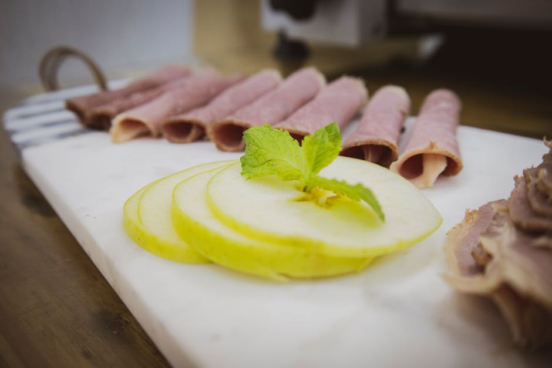
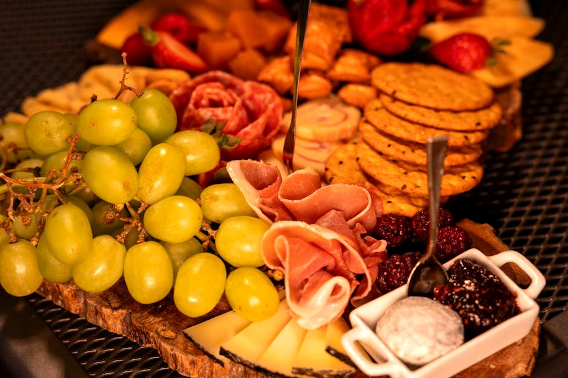
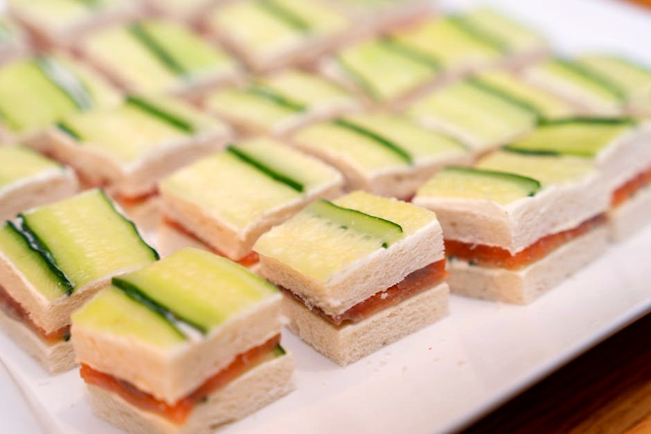
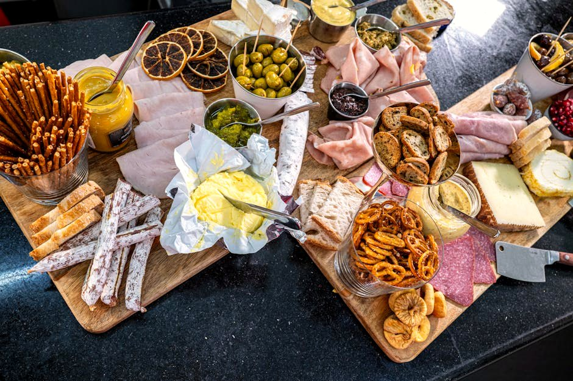
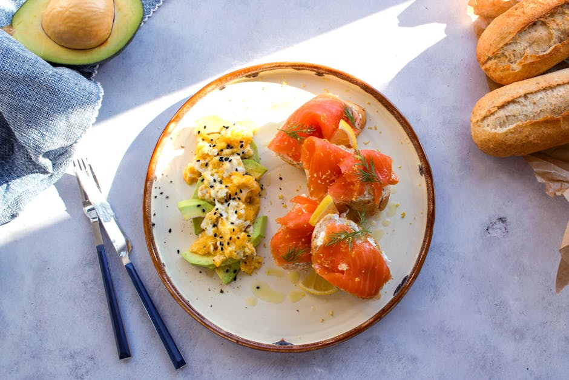

High-Protein Snacks
Most “protein snacks” are 12 g of protein wrapped in marketing. These 22 are engineered like meals — around 70 g of protein each — so one snack genuinely holds you for hours. Sweet mousses and cheesecake cups included, sugar not.
22 recipes · every one lands ≈70 g of protein with under 20 g net carbs · tap any card for the full recipe, macros & dietary swaps
 Cottage Cheese & Cucumber Protein Plate
Cottage Cheese & Cucumber Protein Plate
 Cocoa Greek Yogurt Protein Mousse
Cocoa Greek Yogurt Protein Mousse
 Tuna-Stuffed Avocado
Tuna-Stuffed Avocado
 Turkey & Cheese Roll-Up Snack Box
Turkey & Cheese Roll-Up Snack Box
 Edamame & Cottage Cheese Bowl
Edamame & Cottage Cheese Bowl
 Vanilla Almond Protein Shake with Skyr
Vanilla Almond Protein Shake with Skyr

Roast Beef & Cream Cheese Roll-Ups No-Bake Protein Cheesecake Cup
No-Bake Protein Cheesecake Cup
 Whipped Cottage Cheese & Berry Protein Pot
Whipped Cottage Cheese & Berry Protein Pot

Beef Jerky & Cheese Plate
Smoked Salmon & Cottage Cheese Cucumber Rolls Tuna & Egg Protein Box
Tuna & Egg Protein Box
 Protein Hot Chocolate
Protein Hot Chocolate
 Peanut Butter Protein Mousse
Peanut Butter Protein Mousse
 Frozen Greek Yogurt Protein Bark
Frozen Greek Yogurt Protein Bark
 1-Minute Protein Mug Cake
1-Minute Protein Mug Cake
 Whipped Ricotta & Berry Protein Bowl
Whipped Ricotta & Berry Protein Bowl

Ham & Cheese Protein Pinwheels Chicken & Cheese Protein Box
Chicken & Cheese Protein Box

Salmon & Egg Protein Pot Savory Whipped Cottage Cheese Bowl
Savory Whipped Cottage Cheese Bowl
 Egg & Cheese Snack Plate
Egg & Cheese Snack Plate
More collections: High-Protein Breakfast Ideas · High-Protein Lunch Ideas · High-Protein Dinner Recipes · Vegetarian High-Protein Recipes · Quick High-Protein Meals (Under 30 Minutes) · High-Protein, Low-Calorie Meals · High-Protein Meal Prep Recipes